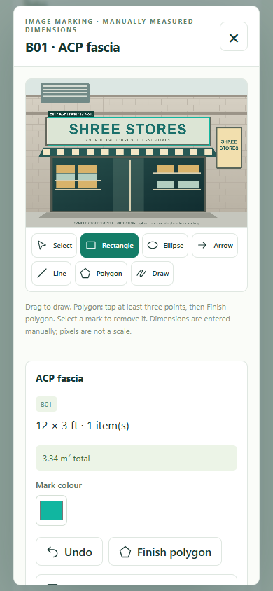

Experience a site visit.
Open Shree Stores, start the recce, fill site details and mark a material. Use the supplied sample photo or add your own.
Start a recce →Try the recce journey on your phone, tablet or computer. Add materials, mark photos with measurements and turn the visit into a useful report.

Open Shree Stores, start the recce, fill site details and mark a material. Use the supplied sample photo or add your own.
Start a recce →Explore jobs and status cards, review material evidence, choose report columns and try Excel, CSV or Print/Save PDF.
Explore the dashboard →Short English and Hindi videos show the actual field screens, from assigned jobs through photo marking and reporting.
Choose a walkthrough →